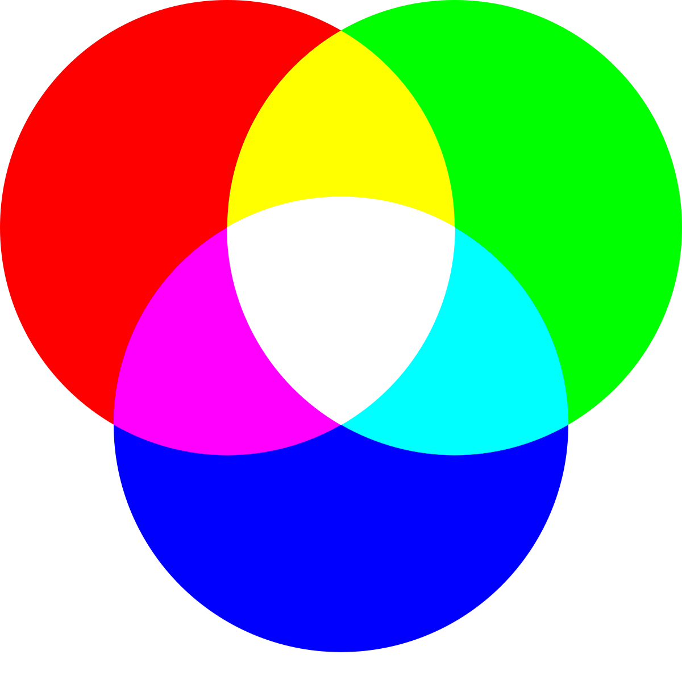
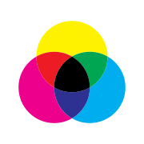

CNS
systematic notation for named colors for computer applications using English terms created by Berk et al. in 1982
ISCC-NBS lexicon
a system for naming colors based on a set of 13 basic color terms and a small set of adjective modifiers.
systems of colors
RBG

an additive color model in which the red, green and blue primary colors of light are added together in various ways to reproduce a broad array of colors. The name of the model comes from the initials of the three additive primary colors, red, green, and blue
CMYK

a subtractive color model, based on the CMY color model, used in color printing, and is also used to describe the printing process itself. The abbreviation CMYK refers to the four ink plates used: cyan, magenta, yellow, and key (black)